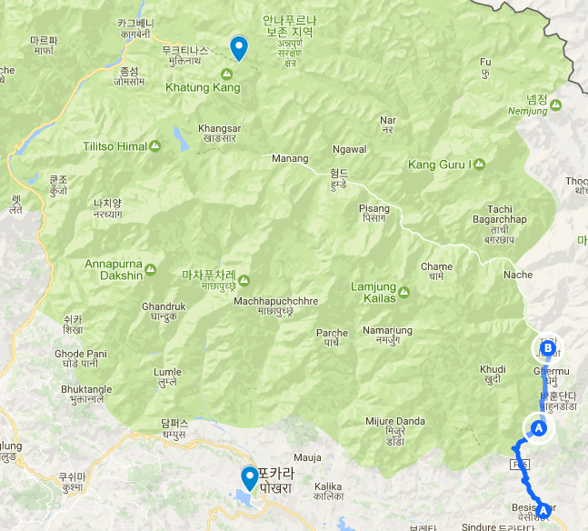
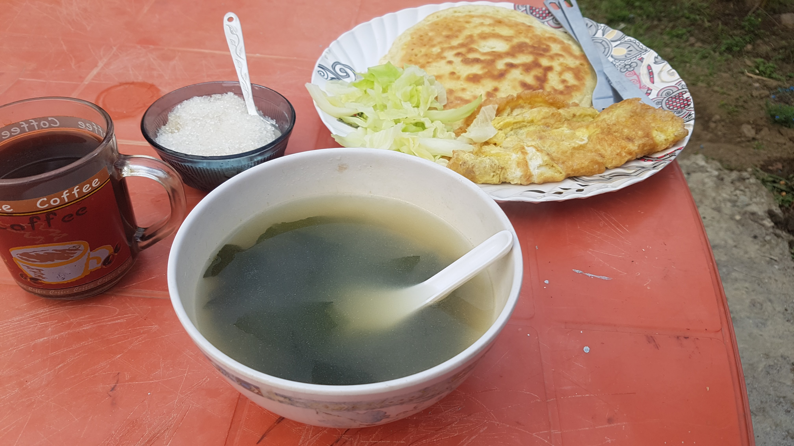
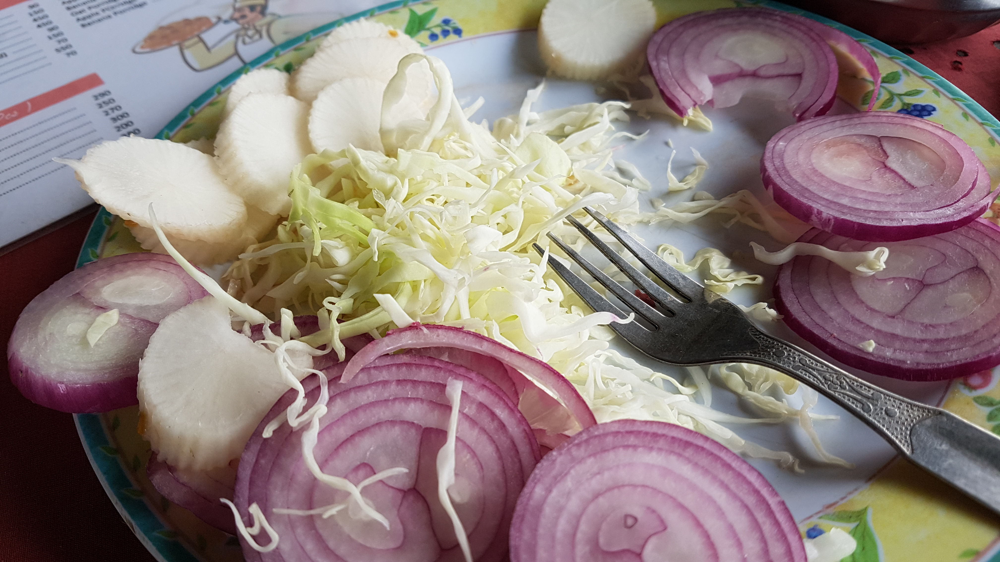
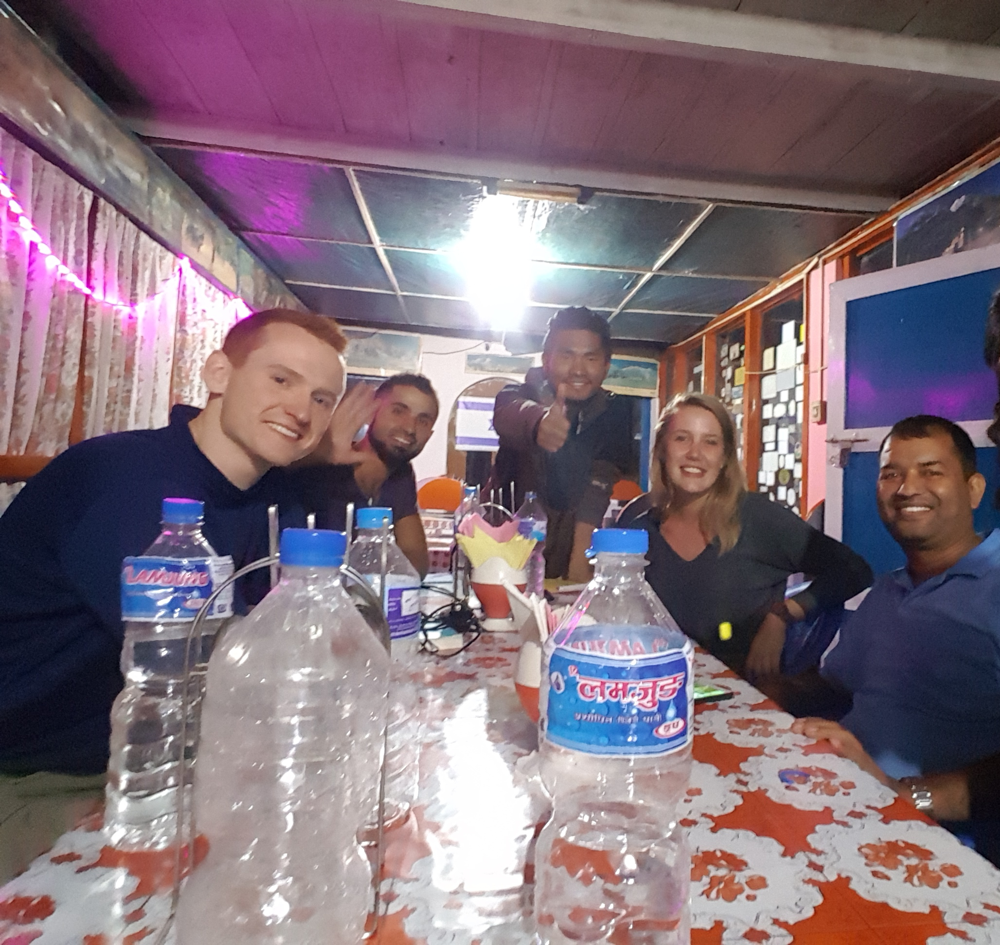

길에서 만나는 좋은 사람들
2017년 04월 13일
여행 D+10, 안나푸르나 D+2
오늘 이동 경로 (12km)
나디 -> 바훈단다 -> 게르무 -> 자갓

출발
어제 일찍 잠들었다. 9시가 조금 안되서 잔것 같다. 새벽 1시반에 깼다. 요즘 자주 자는 중간에 깬다. 시차가 적응이 안되서 그런걸까? 계속 중간중간 깨다가 5시에 기상했다. 그래도 푹잔것 같다. 어제 잘 못자기도 했고. 이 롯지 시설이 워낙 않좋아서 잘 못자는거 아닌가 걱정했는데 생각보다 숙면한것 같다.
출발. 오늘의 미션은 스포츠 타월 구하기다. Ngadi를 탈출하기 전에 수건을 파는 매장을 찾아야 한다. 걸으면서 몇몇 작은 가게를 만나서 물어봤는데 수건을 팔지는 않는다. 계속 물어보다가 한 가게에서 드디어 수건을 찾았다. 내가 원하던 스포츠 타월은 아니어서 고민되었지만 또 살기회가 없을것 같아서 바로 구매했다. 200루피로 구매했다. 다행이 오늘의 미션은 쉽게 끝났다.
 오늘은 내 생일이다. 한국에서 친구가 준 미역국 블럭을 어제 밤에 롯지 언니에게 줬다. 아침으로 만들어 달라고 요청했다. 덕분에 히말라야에서 아침 생일상을 먹었다.
길에서 만난 좋은 사람들
길에서 몇몇 팀을 다시 만나게 된다. 그들과 즐겁게 인사하고 대화한다. 어제만난 거스와 이리쉬를 두번이나 또 만났다. 정말 반가웠다. 몸이 힘들고 혼자 있으니 더 반가웠던것 같다. 또 한팀은 서로 통성명은 하지 않았지만 길에서 자주 마주쳤다. 아까 다시만났을 때 Nice to see you again이라고 말했는데 그들도 똑같이 반가워해줬다. 또 같은 방향으로 가던 세명의 이스라엘 여자애들은 나에게 쿠키도 하나 줬다. 우리 모두 군대에 의무적으로 가야한다며 잠시 수다를 나누기도 했다.
안나푸르나 트레킹중 만나게 되는사람들은 모두 좋은 사람들인것 같다. 좋은사람들만 트레킹을 하는걸까? 모두 반갑게 인사해주고 서로 배려한다. 놀랍다. 육체적으로 힘드니까 서로 서로 돕는것 같기도 하다. 길에서 만난 이스라엘 애들과 그의 가이드가 같은식당에서 식사를 하게 되었다. 그때 그 가이드 모리스가 많은 정보를 내게 줬다. 좋은 사람들이 참 많다. 짧은 영어지만 그들과 많은 대화를 하게 된다. 못하는 영어를 생각보다 부끄러워하지 않아도 된다는것을 알게 되었다. 대부분 문법이 틀리고 말이 잘 안나와서 내가 말을 마칠때까지 기다려준다. 그러니 이상한 단어의 조합이라도 자신있게 이야기해도 된다. 그냥 생각나는 대로 의미만 맞게 쏟아내다보면 점점 늘것같다.
그동안 채소를 많아 못먹은것 같아서 점심때 야채를 달랬더니 생양파랑 순무 토마토 줘서 다 먹지도 못하고 남겼다. 억지로 촤대한 먹기는 했는데 생양파는 도저히 못먹겠다..
원래 오늘 딸까지 갈 수 있었으면 좋았겠지만 그 전 침체도 못가고 자갓에서 오늘 트레킹을 종료 했다. 거리는 12km이다. 어제보다 1km더 짧았는데 시간은 더 오래걸렸고 더 힘들었다. 고도 높낮이가 많이 바뀌어서 그랬던것 같기도 하다. 9시 출발해서 4시반즘 도착했으니 점심시간을 빼면 6시간정도 걸은것같다. 게르무에서 자갓까지 금방 갈줄알았는데 오늘의 가장 어려운 코스였다. 가파르기가 매우 컷기 때문이다. 게다가 모두 숙소를 구했는지 지나가는길에 트레커들을 찾을 수 없었다. 자갓에 거의 다달아서 2명의 부부를 만났는데 어찌나 반갑던지 그들과도 또 즐겁게 대화했다. 진짜 트레킹은 자꾸 좋은사람들을 만나게 된다. 마지막 자갓으로 향하는 코스는 힘들었다. 오르막 지름길로 갔는데 정말 힘들었다. 그렇지만 할만 했다. 힘듦에 몸이 적응해서 그냥 관성으로 계속 나아가게 된다고 표현하면 맞을것 같다. 
숙소에서 좋은 사람들을 또 만나다.
드디어 숙소에 도착했다. 온수샤워를 할 수 있는 숙소를 잡아서 샤워를 했다. 최고의 샤워였다. 감동. 샤워도 하고 빨래도 하고 필요한것을 마친 뒤 1층 로비로 가서 앉아있는 사람들을 만났다. 유럽계 백인들이라 처음에 다가서기 어려웠지만 그럴때일수록 더 긴장하지 않은듯 아무렇지 않게 인사라면 생각보다 그들과 쉽게 대화할 수 있음을 다시 깨닫게 된다.
이렇게 외국사람들이랑 즐겁게 이야기하긴 처음이다. 오늘이 내 생일이라고 했더니 이들이 내 생일 축하도 해줬다. 그리고 내 나이가 20대 초반처럼 보인다고 했다. 나는 오늘 받은 생일 선물이라며 고맙다고 말해줬다.
특히 미국인 친구 패트릭이랑은 많은 대화를 했다.(사진 맨 왼쪽) 영화이야기. 특히 위플래쉬를 재밌게 봤다는것. 각자 전공. 칼 맑스, 애덤스미스 이야기까지 했다. 패트릭은 시카고에서 투자은행에서 일했고 지금은 일을 관두고 3개월 여행중이라고 한다. 나랑 비슷한 시점에 여행을 시작했다. 이 트레킹 구간중 몇번이나 만날지 모르겠지만 좋은 친구인것 같다. 더 많이 만나서 친해지고 싶은 친구다. 나에대한 많은 호기심을 가지고 있기도 하고 영어대화도 잘 이끌어준다. 그의 가이드 타쿠라도 마찬가지다.
패트릭이랑 내일 다라파니에 있는 marsandi 호텔에서 다시 만나기로 했다. 다들 가이드 포터를 고용해서 다니기 때문에 나보다 빨리 가겠지만 내일은 꼭 다라파니에 도착해서 이사람들과 다시한번 만나고 싶다. 정말 늦게까지 대화를 했다 6시 정도부터 거의 9시반까지 시간가는줄모르고 대화했다. 즐거운 시간이었다. 트레킹이 멋진 경치를 보는것도 장점이지만 이렇게 좋은 사람들을 많이 만날수 있다는것도 큰 장점인것 같다.
 왼쪽부터 패트릭(미국), 로메로(아르헨티나), 비샬(네팔), 로즈(네덜란드), 타쿠라(네팔)